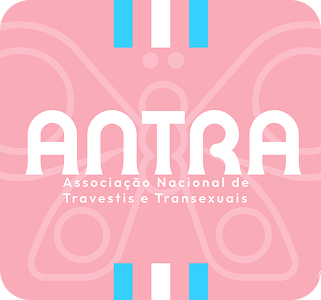
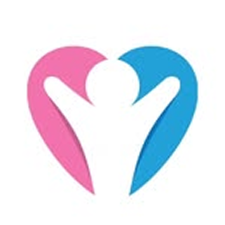
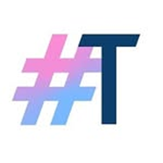
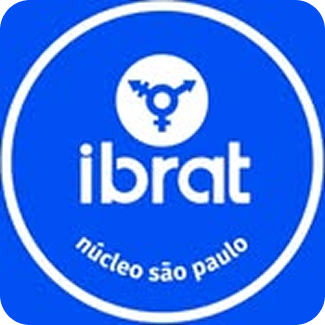
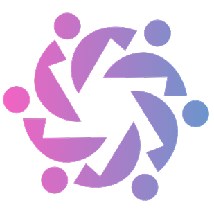
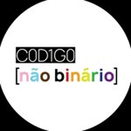
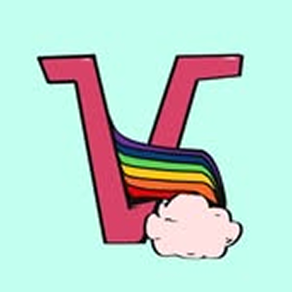

recursos

A Associação Nacional de Travestis e Transexuais (ANTRA), é uma rede nacional que articula em todo o Brasil 127 instituições que desenvolvem ações para promoção da cidadania da população de Travestis e Transexuais.
acesse aqui
MINHA CRIANÇA TRANS é a primeira organização não-governamental do Brasil a tratar exclusivamente das questões que envolvem saúde, qualidade de vida, políticas públicas e direitos de crianças e adolescentes transgêneres.
acesse aquiFundada em 2017, a Casa 1 é um projeto da sociedade civil. Somos uma Republica de Acolhida, um Centro Cultural e uma Clínica Social. Tudo junto, pela comunidade LGBTQIAPN+!
acesse aqui
TRANSEMPREGOS: O maior portal de vagas e currículos para pessoas Trans do Brasil
acesse aqui
Nosso objetivo principal é atuar na defesa das pautas transmasculinas em frentes que são essenciais para a vida: educação, política, trabalho, saúde e cultura, tendo uma abordagem incisiva - sem deixar de fazer articulações necessárias, e usando estratégias de comunicação, arte e história para tal.
acesse aqui
DIVERSIFICADEV: Oferecemos cursos gratuitos em uma rede segura, com apoio emocional e acolhimento para pessoas trans, travestis, não-bináries e outras identidades sub-representadas.
acesse aqui
Uma organização da sociedade civil que trabalha para que a diversidade, a inclusão e a equidade estejam no cerne das práticas de tecnologia e política, para garantir que soluções nesses setores sejam desenvolvidas e implementadas de maneira a proteger e defender os direitos e as liberdades de todes.
acesse aquiAmbiente acolhedor para integrar, representar e apoiar a comunidade LGBTQIAPN+ na Universidade Estadual de Campinas!
acesse aqui
VALE TUDO: Coletivo LGBTQIAPN+ do Colégio Técnico de Limeira (COTIL).
acesse aqui